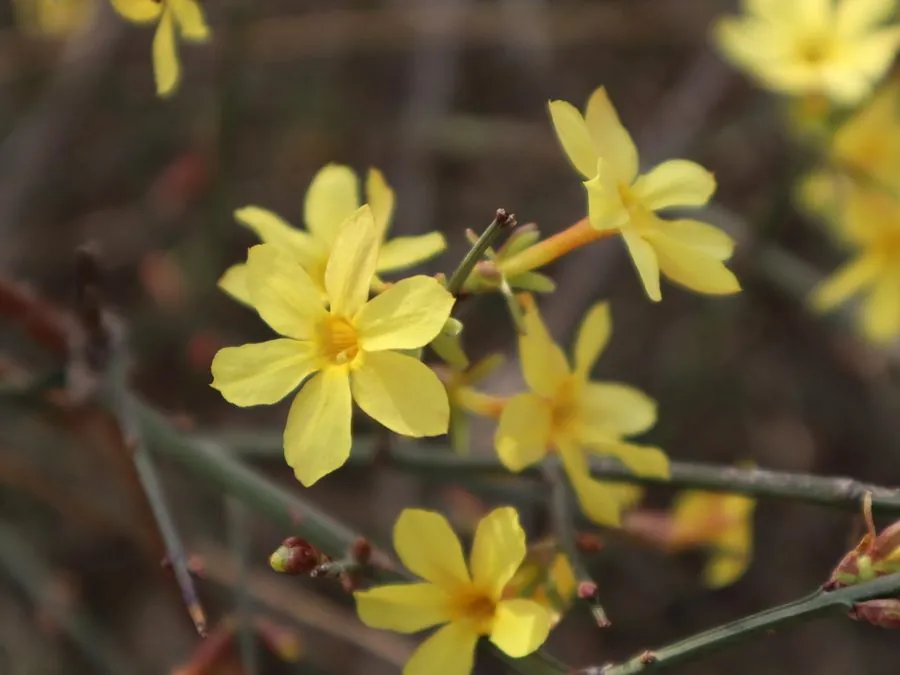

灌木与花木 · 植物界
迎春花 Jasminum nudiflorum

早春先花后叶的落叶灌木，枝条细长下垂，金黄色小花缀满枝头，是春节前后最常见的观赏花木之一。
- 分类
- 门被子植物门纲木兰纲目唇形目科木犀科属素馨属
- 栖息环境
- 海拔 1500 米以下的山坡、灌丛与河岸，喜光耐寒，对土壤要求不严
- 地理分布
- 原产中国华北、西北及西南，全国各地广泛栽培
- 保护级别
- 暂无评估；中国未列入国家重点保护野生植物名录
物种志
迎春花为落叶灌木，高可达 5 m，枝条细长、拱形下垂，小枝四棱形、绿色。叶片对生，三出复叶，小叶卵形至椭圆形，边缘具短睫毛，顶生小叶较大。花期 2–4 月，先花后叶，花单生于去年生小枝叶腋，花冠黄色、5–6 裂，花径 2–2.5 cm，形似小喇叭；浆果椭圆形，成熟时黑色，但结果稀少。
迎春花原产中国华北、西北及西南的山坡灌丛，现全国各地广泛栽培，喜光、耐寒、耐旱，对土壤要求不严，在路边、墙角和堤岸也能生长。因花期早、花色明媚，常被种植于庭院、花坛与假山旁，与梅花、山茶、水仙并称“雪中四友”；枝条可编扎造型，也是优良的绿篱与护坡植物。叶与花可入药，有清热解毒之效，但味苦不宜多食。
形态与习性
- 株高可达 5 m，枝条拱形下垂
- 花期2–4 月，先花后叶
- 果期6–7 月，结果稀少
- 光照喜光，稍耐阴
- 水分耐旱，怕积水
- 土壤适应性强，沙壤土至黏壤土均可
- 主要用途庭院观赏、绿篱、护坡与垂吊绿化
趣味知识
- 迎春花先花后叶，早春枝条上开满金黄色小花，是最早报春的花木之一。
- 迎春花与连翘花期相近，但迎春花是三出复叶、花冠裂片圆，连翘是单叶、裂片尖长。
- 迎春花的枝条接触地面后容易生根，因此常被用于护坡和垂吊绿化。
- 迎春、梅花、山茶、水仙被并称为“雪中四友”，都是冬末春初的观赏花卉。